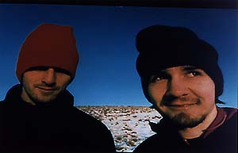

BOARDS OF CANADA
Interviewed by Virgin France, in Paris JUIN 1998
Deux esthètes de l'électronique entre nostalgie de l'enfance et paranoïa du futur
BOARDS OF CANADA JUNE 98 In the heart of the Parisian Marsh, within two steps of the Picasso Museum, one would easily see Markus Eoin and Michael Sandison. They have the air of hippies travellers and not of techno freaks, both Boards of Canada, with their smile, rucksack and their wool bonnet... There one does not imagine to hold the authors of a crystal electronic coffee-table book pure, published under a double signature one cannot connected any more: Skam and Warp, respectively pointed label of Manchester and mythical head office of the electronica made in Sheffield.
This album, " Music Has the Right to Children ", resembles its small pocket. The image of a family or a group of friends, obviously on the stones of a castle in ruin. Naive image like the universes of the " magic Horse-gear " and the " Animals of the World ". Banal. Happy. But this image is embedded of light green blue, as under the effect of a flying saucer in phase of landing. And then there are these smooth faces like a pumice. Worrying. Faces the human ones zombifiés. What hides Michael Sandison and Markus Eoin by this image of disturbed innocence? Both Scottish - we confused the voice in the interview - seem to do only one, the first a little more talkative than the second with his accent to strike the ear lobe...
VIRGIN MEGAWEB: One does not see well which you are, which you did, you are Scottish, not?
BOARDS OF CANADA : It is right, we live in Scotland, in the countryside a few kilometres from Edinburgh...
Apparently, you were never related to a scene or a particular style of music? You seem isolated enough?
BOC - Yes, it has been only for two years that we started to contact other musicians, in particular of the artists of Skam Records and from Warp. In fact, that made for a very long time that the group saw, between friends. That goes up at the beginning of the Eighties, when we were young...
You started adolescent to actually make music?
BOC - Yeah. We had both ten years old, something like that. We learned how to still play of the younger instruments, then very early we handled recordings, cassettes and tapes, making joinings. We started to write and to play in a more serious way around 1987, ten years ago, in the format who is ours.
You two only?
BOC - No, with other musicians, within the framework of a true group much broader. But, a few years ago, after having played of the guitars and from the acoustic battery, we returned to a form more frankly electronic...
Actually, when you started to play, it was rather like a set of teenagers, testing with recordings of films and instruments. You did not seek to make career...
BOC - One had fun with sounds which we liked, from where that they come. Our course is a little complicated. Initially, one tested without putting questions, with the means of the edge, then one worked much with musicians and truths instruments, one complexed our music. Five years ago, it sounded nearer to the experimental rock, with the vocal ones on the occasion... There was nevertheless no badly electronics, already one samplait our own instruments. Then we returned to a spirit closer to our beginnings, simple and instinctive, with the only difference which we use from now on digital too, and which it is thus much easier to have fun and to obtain what one wishes...
You feel close to all the generation of the home studio?
BOC - In a sense, perhaps. Our step of beginning with our old apparatus to record be as a version poor of it that some other have make thereafter with the home studio. But if one were near to the spirit of generation, it is by chance and moment, because we always advanced isolated a little in our corner, inspiring to us by electronics.
You do not have any link with the generation of the acid house?
BOC - Not Actually, at that time, at the beginning of the Nineties, we recorded a music with the vocal ones and guitars, very influenced by groups of experimental and atmospheric music like My Bloody Valentine. They are only front and after the explosion of the acid house, in complete shift, that we were perhaps close to the movement...
Finally, why then you returned to electronics?
BOC - It was more natural for us... We worked always much, polishing our music unceasingly, even when they sounded more acoustic or guitar. For one month, two months, one reconsiders our pieces, changing a sound here, by adding another... One sample ourselves unceasingly, to return to a sound almost exclusively electronic, it was simply to go until the end of our logic.
Was this sampler appropriateness thanks to the new technological tools, that you did not have at your beginnings, one of the reasons of your return to electronics?
BOC - Yeah... This technology enabled us to simplify our step. With the sampler, you have the absolute control of your music. You can take the sound of an instrument, and make it sound with your own way with blows of going return. An example: on our last album, there are titles for which we used a piano. Thanks to the sampling, we transformed the sound of this piano of full in different ways, at the point to make it sound like one very very old piano, or so much so that anybody realisedoes not realise by listening to the album that there is piano. Also voices the same. Even topo for the guitars. We played of electric or acoustic instruments for " Music Has The Right To Children ", but we completely worked over again their sound thanks to electronics.
Why these childish melodies on your album, from where that come does?
BOC - One finds there the echo of the melodies which marked our childhood, and these melodies, for the majority, come from tele, and in particular from films and childish emissions. In fact the universe marked our generation. We have all the same age. We grew by seeing the same programs TV, and it is for us an influence much stronger than the musics of today or than of other musics that we listen at the time. These are the airs which remain in our heads, that one wants it or not.
You are very nostalgic of your childhood?
BOC - Yeah... Under a very experimental surface, very minimal and industrial, one perceives echoes of this nostalgia, tele programs which marked childhood. And I believe it will go further in this direction. It is a natural process of creation. One invents starting from the traces of his memory as much as starting from his desires.
You use samples of programs TV?
BOC - No. All the melodies which sound as samples are made by us, then destroyed by the sampling.
Sometimes, by listening to the album, there is the impression to hear songs of birds, noises of nature... They are not samples?
BOC - Some. It is a great influence, it is right which nature influences us, all like the open windows of the studio (laughter). It is for this reason, " Rue The Whirl ", on the album, where one intends birds to sing. In fact, I listened to this piece, and, oddly, I perceived noises of birds. It be there that I me be realize that the window be open, and as these song himself marry with wonder with the music, we them have record to find the impression feel in listen to the title with the window open.
At the beginning of the interview, you spoke about your friends and of your family around you, act does of a community of artists? Students in history of art?
BOC - Some of our friends are students in history of art, or professors of modern art some are artists, others are only enthusiastic friends. One finds there photographers, film realizers, artists and musicians... And then much of friends whom we kept from the school. When we were at the school, all our friends were in groups of rock'n'roll, we were the only ones to make electronics. At that time, we started to make films, vidéos in addition to the music... One produced work of some of our friends, who they are expos or documentary...
You carry out vidéos in the same spirit as your music? It is not video high tech?
BOC - Yes, completely. It is a little Do It Yourself video, except that we do not use badly a equipment high tech. One likes to degrade the photo or video images as one degrades the sound, to make the images harder, primary, dirty... One tests corrompre technology.
Does that sometimes happen to you to create of a same dash music and images? To think your music in images?
BOC - Yes, of course, but in a natural and intuitive way more than calculated. The most shifted musicians electronic like that their music sounds kinematic, i.e. in images. It is an all the more easy step for the musicians that do not think systematically of the clubs when they create a title... If one can dance on one of our titles, it is perfect, but we do not seek it. We leave ourselves any freedom, with the objective to translate emotions rather than to make dance. There are heaps of people who do that so much better than us.
Why put us at it to us also by doing it less better? There are however pieces which would go well in club on the album... It is well. Admittedly, we work the rates/rhythms, but for us it is about a vehicle for the beautiful ones and strange melodies. We try to vary the effects, and it is all the more significant for the scene. In addition, we like the supported rates/rhythms, almost binary, because they stick well to our desire to create dark and obsessional atmospheres to marry them with our melodies.
One finds this duality in a title like " An Eagle In Your Mind "... It is exactly that. On a side of the melodies and almost naive voices, other, a process of corruption of these voices and melodies, by an environment or transformations, as in the title which you quote or " Sixtyten "... One does not wish to go towards rates/rhythms like those of the drum'n'bass, which, by their ambition and their complexity, can foutre in the air this type of effect and the emotion turbid and ambiguous that we wish to create. The rate/rhythm must remain simple. It is a question of balance.
In do concert, you try to mix its and image, as if they were answered one the other?
BOC - Not, not yet. Admittedly, we may try to marry image and sound. We try to create the visual ones who stick to the music, but within the limit of the technical possibilities... We were very influenced by a group which is called Test Department, in the eighties, which played much with the images and the sounds, and which did not have anything to make dance or the pop one like much of artists of the time. They always followed their way, without worrying about the mode.
A group like Test Department, even if it could make dance, contrefoutait rate/rhythm of the time. They were very strong, in particular on scene, because they did not resemble anybody. They made industrial music, but with the occasion mixed with it with the Celtic influences or the rates/rhythms to be danced... They showed us that one could survive and respected by carrying out his own way, without trying to copy the style of the others.
Is your concerts are very well prepared, or there a place for the improvisation, in particular by the image?
BOC - One cannot easy improvise with the image. It is an objective but it is very hard. One will start to use computers to advance on this way, using computer video, in order to treat the video clips like sources of samples image. Today, on scene, one cannot easy play with the video like one does it with the vinyls. There is an element of chance nevertheless. We do not want that a show is perfect, because we do not like the perfection. We wish that there be chaos in a spectacle or a music, hardness, surprises... That returns more all exciting...
Is your large studio in a small city?
BOC - It is in the countryside, with some houses, with miles of Edimbourgh. It is not a very large studio, but it is full with maths...
It is a kind of community?
BOC - A group of friends. Each one with its family...
In cities like Glasgow or Edinburgh, there is a very active artistic scene, in art, video and electronic music of course, with very young artists, festivals, etc, of it are you close?
BOC - It occurs there from the things formidable, impossible to follow all. Never there were as many places and initiatives for the experimental music, and, more largely, for all the daring artistic initiatives. There shows of video with Internet for example, of the videos mix into live, of the very odd heap of tricks implying the public... There is also a very rich atmosphere electronic, as there were not some before...
All the voices which you do use are those of friends?
BOC - Yes, for the majority. It is one mix of things. One uses for example cassettes which we had recorded ten years ago, that one listens to like that, and which one uses a word. One lets oneself go to the rediscoveries chance.
Do the theories of Sciences interest you? Sciences a little barjes?
BOC - Yeah. I do not know from where that comes, but strange sciences always impassioned us, and numbers... that influences what we do. Me, they are rather the numbers and their form, and psychologies. I was always impassioned reports/ratios of the music and numbers. The psychedelic experiment goes in this direction, it can help us to see the things in terms of numbers and forms, of structures, as if the music were made crystals.
Does that influence you? It is an aspect of your universe?
BOC - One does not say oneself, hold, there in fact the artificials will influence us. Not, these strange sciences form part of our universe, and one finds it in our music. Not science fiction, but these sciences which concretize today visions of the SF of the past. We grew in the seventies, at one time of great paranoia compared to sciences, paranoia which one found in the science fiction of the time, in the books as in films. It is this paranoia, this pessimism, this fear of the science which one finds in our music as well as other influences. At the time when we grew in the seventies, the vision of the future which showed through with tele or in films was very bleak, and very strong.
You also spoke about psychedelism?
BOC - Yes, we plunged in art and the psychedelics at one time. One réécoute often of the groups of the end of the sixties...
" Good Vibrations "?
BOC - Yes, exactly this kind of things, Beach Boys of the time " Good Vibrations ", the numbers, secret in Beatles of 1967. For us, Beatles really became enthralling with the psychedelism. Or of the film tricks inspired, or if not Incredible String Band...
How did you come into contact with Skam Records?
BOC - We made an album, a EP. One sent it to some people, of which Sean Booth d' Autechre. The shortly after the day when it received it, Sean us called, and said to us that us must do something with Skam. One gave them a title for a compilation, an EP, and the last year one started to work on an album for Skam. About September, we also sympathized with people of Warp. They said to us that they also wanted this album, but without pricking it in Skam, this is why the album comes out with the double label Skam and Warp.
Remarks collected by Ariel Kyrou and Jean-Yves Leloup, Paris Juin 1998
Photograph: PIC.